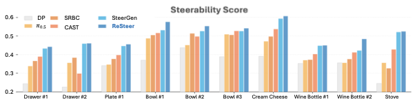
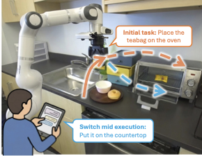
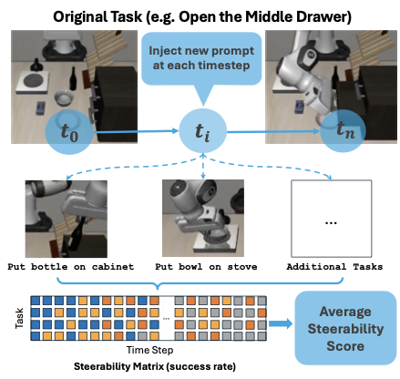

Figure: ReSteer consistently improves steerability score across tasks versus baseline policies, showing stronger task switching under the same rollout conditions.
Despite strong multi-task pretraining, existing policies often exhibit poor task steerability. For example, a robot may fail to respond to a new instruction "put the bowl in the sink" when moving towards the oven, executing "close the oven", even though it can complete both tasks when executed separately. We propose ReSteer, a framework to quantify and improve task steerability in multitask robot policies. We conduct an exhaustive evaluation of state-of-the-art policies, revealing a common lack of steerability. We find that steerability is associated with limited overlap among training task trajectory distributions, and introduce a proxy metric to measure this overlap from policy behavior. Building on this insight, ReSteer improves steerability via three components: (i) a steerability estimator that identifies low-steerability states without full-rollout evaluation, (ii) a steerable data generator that synthesizes motion segments from these states, and (iii) a self-refinement pipeline that improves policy steerability using the generated data. In simulation on LIBERO, ReSteer improves steerability by 11% over 18k rollouts. In real-world experiments, we show that improved steerability is critical for interactive use, enabling users to instruct robots to perform any task at any time. We hope this work motivates further study on quantifying steerability and data collection strategies for large robot policies.
Language-conditioned multitask robot policies such as Vision-Language-Action (VLA) models [1-7] have emerged as a promising paradigm for robotic control, unifying language-specified goals and visual understanding. These policies use language instructions as an intuitive and flexible task representation, leveraging pretrained multimodal backbones [8] to encode grounded priors about the physical world. While these models have demonstrated immense capability, fitting dozens of tasks [3, 5], generalizing across new embodiments [1, 4], and unlocking different types of embodied reasoning [4, 9], a key failure mode remains: steerability.
Steerability captures a policy's ability to properly condition on new task instructions in arbitrary states. Consider the example in Fig. 1, where we initially instruct the robot to put the tea bag on the oven, then ask it to place it on the countertop. Existing policies [1, 2, 4] tend to ignore the new instruction and continue executing the original task, operating as if they were conditioned on state alone. This deficit is particularly problematic as it prevents users from issuing new instructions during ongoing execution, severely restricting when and where a robot can be meaningfully controlled.
In this work, we argue that a policy's steerability is a function of its training data distribution, with most existing datasets exhibiting pathologies that encourage learned models to ignore task conditioning. Concretely, existing datasets are collected subject to the following recipe: we identify a set of tasks, then collect demonstrations on each task independently. This process yields data where language is only informative for a small fraction of total task execution, leading to policies that over-index on state information to dictate behavior, a form of shortcut learning [10].
As an initial contribution, we formalize this intuition via conditional mutual information (CMI): given a dataset and learned policy, steerability can be approximated by I(A; L|S). In other words, incorporating language prompts reduces the variance of the predicted action distribution, indicating that instructions meaningfully constrain action selection. Empirically, we validate our proxy metric through experiments across multiple state-of-the-art VLAs, showing a strong correlation between our proposed metric and steerable success rate.
Motivated by this diagnosis, we argue that incorporating data where the task instruction changes mid-execution, eliciting corresponding behavioral switches, is critical for improving the steerability of the learned policy. To this end, we introduce ReSteer, a simple yet effective data generation framework that comprises two stages: stage-aware steering data generation and self-refinement.
In stage-aware steering data generation, for each switch from task A to task B, we (i) use CMI to identify low-steerability states along task A rollouts, (ii) pick a target state from task B, and (iii) synthesize a transition trajectory between the two for training. Since this first stage alone does not always guarantee reliable execution, we then apply a self-refining behavioral cloning stage: the policy is iteratively deployed to collect rollouts and finetuned solely on its own successful trajectories, reinforcing in-distribution steerability induced by the new steering data.
We evaluate ReSteer in both simulation and real-world experiments. On LIBERO [11], baseline policies exhibit limited steerability, especially at later switch points. ReSteer improves switched-task success by 10% absolute on benchmark task switching and improves steerability by 11% over 18k rollouts. In real-world kitchen experiments, ReSteer improves steerability by 2.2x over teleoperation-only finetuning and enables flexible long-horizon instruction chaining during execution.

Figure: Daily manipulation is time-critical and often interruptible. ReSteer targets this setting by enabling policies to switch to revised user instructions from intermediate states.

Figure: ReSteer consistently improves steerability score across tasks versus baseline policies, showing stronger task switching under the same rollout conditions.

Figure: On LIBERO, ReSteer yields the largest average gain in switched-task success over baseline policy performance across switch timesteps.
ReSteer is built on the hypothesis that poor steerability is largely a data coverage problem: policies need explicit trajectory segments that represent mid-execution task switches. The data generation stage uses steerability signals to identify difficult states, then synthesizes transitions to target states under new task prompts.

Figure: Steering trajectory synthesis expands overlap between task-conditioned trajectory distributions, improving reachable transitions during instruction switching.

Figure: Steerability is measured by injecting new prompts at different rollout timesteps and aggregating switched-task success into an average steerability score.
ReSteer contains three components: (1) a steerability estimator based on conditional mutual information to find low-steerability states, (2) stage-aware steering data generation to synthesize switch trajectories from those states, and (3) a self-refinement loop that re-trains on successful switched rollouts to reinforce in-distribution steerability.

Figure: Full ReSteer pipeline from steerability-aware state mining to synthetic steering data generation and iterative policy self-refinement.
@inproceedings{resteer2026,
title = {ReSteer: Quantifying and Refining the Steerability of Multitask Robot Policies},
author = {Chen, Zhenyang and Tian, Alan and Wang, Liquan and Joffe, Benjamin and Lin, Yingyan Celine and Chen, Yuxiao and Karamcheti, Siddharth and Xu, Danfei},
booktitle = {Robotics: Science and Systems (RSS)},
year = {2026}
}